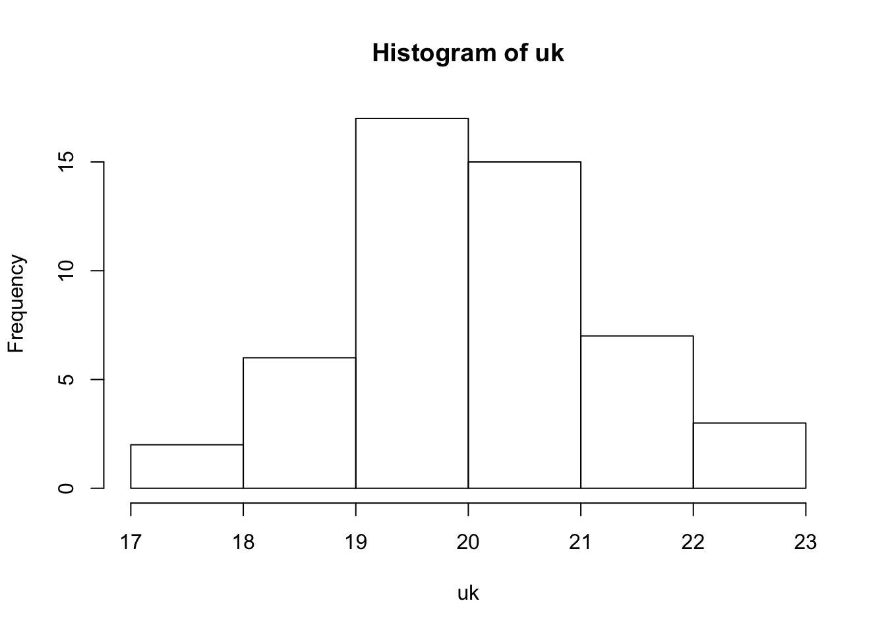
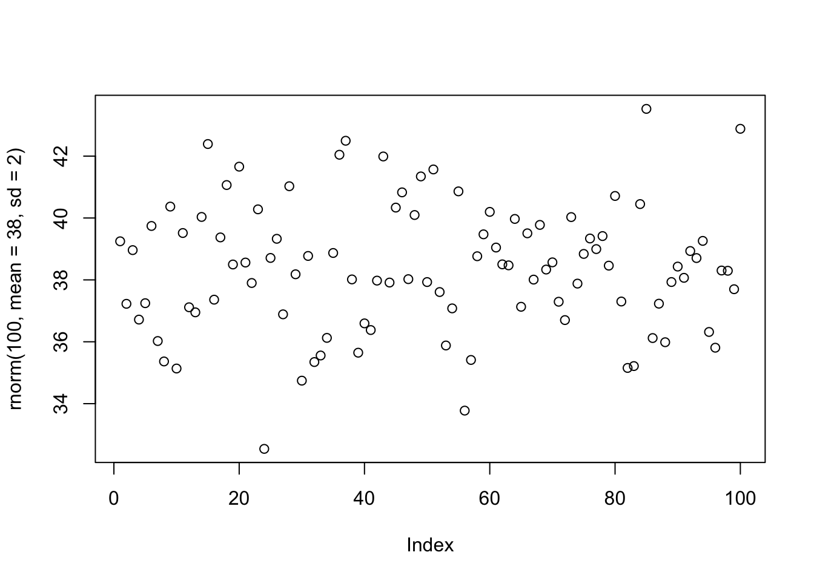
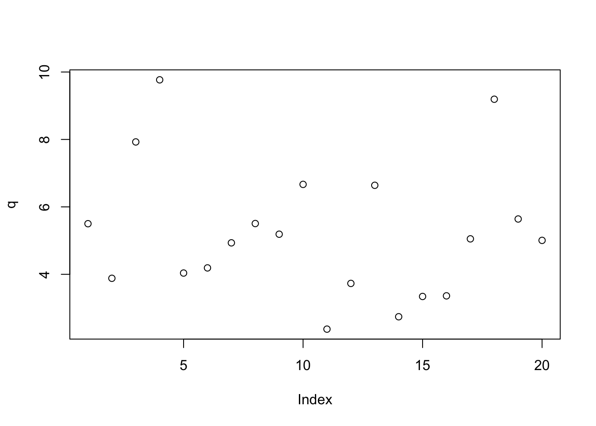

The following is in response to our 2nd week’s assignment. Using the provided list of functions I will define each and demonstrate the function in use.
help(plot)?distributionls()## character(0)dir()## [1] "_site.yml" "docs"
## [3] "images" "index.Rmd"
## [5] "Intrinsics_cache" "Intrinsics.Rmd"
## [7] "Journal_cache" "Journal_files"
## [9] "Journal.Rmd" "LabJournalWebsite.Rproj"
## [11] "Links.Rmd" "README.md"list.files()## [1] "_site.yml" "docs"
## [3] "images" "index.Rmd"
## [5] "Intrinsics_cache" "Intrinsics.Rmd"
## [7] "Journal_cache" "Journal_files"
## [9] "Journal.Rmd" "LabJournalWebsite.Rproj"
## [11] "Links.Rmd" "README.md"red<- seq(1,20,2)
save(red,file="seq.rmd")load("seq.rmd")data("iris")library(ggplot2)read.table(file="int_prac.rtf",sep=",")## V1
## 1 {\\rtf1\\ansi\\ansicpg1252\\cocoartf1671\\cocoasubrtf200
## 2 {\\fonttbl\\f0\\fswiss\\fcharset0 Helvetica;}
## 3 {\\colortbl;\\red255\\green255\\blue255;}
## 4 {\\*\\expandedcolortbl;;}
## 5 \\margl1440\\margr1440\\vieww10800\\viewh8400\\viewkind0
## 6 \\pard\\tx720\\tx1440\\tx2160\\tx2880\\tx3600\\tx4320\\tx5040\\tx5760\\tx6480\\tx7200\\tx7920\\tx8640\\pardirnatural\\partightenfactor0
## 7 \\f0\\fs24 \\cf0 Name
## 8 Age\\
## 9 \\pard\\tx720\\tx1440\\tx2160\\tx2880\\tx3600\\tx4320\\tx5040\\tx5760\\tx6480\\tx7200\\tx7920\\tx8640\\pardirnatural\\partightenfactor0
## 10 \\cf0 Ana
## 11 23\\
## 12 Fred
## 13 34\\
## 14 Dan
## 15 62\\
## 16 David
## 17 12}– did not execute properly, don’t know what wrong.
read.csv(file="iris.csv", header=TRUE, sep="")## Sepal.Length Sepal.Width Petal.Length Petal.Width Species
## 1 5.1 3.5 1.4 0.2 setosa
## 2 4.9 3.0 1.4 0.2 setosa
## 3 4.7 3.2 1.3 0.2 setosa
## 4 4.6 3.1 1.5 0.2 setosa
## 5 5.0 3.6 1.4 0.2 setosa
## 6 5.4 3.9 1.7 0.4 setosa
## 7 4.6 3.4 1.4 0.3 setosa
## 8 5.0 3.4 1.5 0.2 setosa
## 9 4.4 2.9 1.4 0.2 setosa
## 10 4.9 3.1 1.5 0.1 setosa
## 11 5.4 3.7 1.5 0.2 setosa
## 12 4.8 3.4 1.6 0.2 setosa
## 13 4.8 3.0 1.4 0.1 setosa
## 14 4.3 3.0 1.1 0.1 setosa
## 15 5.8 4.0 1.2 0.2 setosa
## 16 5.7 4.4 1.5 0.4 setosa
## 17 5.4 3.9 1.3 0.4 setosa
## 18 5.1 3.5 1.4 0.3 setosa
## 19 5.7 3.8 1.7 0.3 setosa
## 20 5.1 3.8 1.5 0.3 setosa
## 21 5.4 3.4 1.7 0.2 setosa
## 22 5.1 3.7 1.5 0.4 setosa
## 23 4.6 3.6 1.0 0.2 setosa
## 24 5.1 3.3 1.7 0.5 setosa
## 25 4.8 3.4 1.9 0.2 setosa
## 26 5.0 3.0 1.6 0.2 setosa
## 27 5.0 3.4 1.6 0.4 setosa
## 28 5.2 3.5 1.5 0.2 setosa
## 29 5.2 3.4 1.4 0.2 setosa
## 30 4.7 3.2 1.6 0.2 setosa
## 31 4.8 3.1 1.6 0.2 setosa
## 32 5.4 3.4 1.5 0.4 setosa
## 33 5.2 4.1 1.5 0.1 setosa
## 34 5.5 4.2 1.4 0.2 setosa
## 35 4.9 3.1 1.5 0.2 setosa
## 36 5.0 3.2 1.2 0.2 setosa
## 37 5.5 3.5 1.3 0.2 setosa
## 38 4.9 3.6 1.4 0.1 setosa
## 39 4.4 3.0 1.3 0.2 setosa
## 40 5.1 3.4 1.5 0.2 setosa
## 41 5.0 3.5 1.3 0.3 setosa
## 42 4.5 2.3 1.3 0.3 setosa
## 43 4.4 3.2 1.3 0.2 setosa
## 44 5.0 3.5 1.6 0.6 setosa
## 45 5.1 3.8 1.9 0.4 setosa
## 46 4.8 3.0 1.4 0.3 setosa
## 47 5.1 3.8 1.6 0.2 setosa
## 48 4.6 3.2 1.4 0.2 setosa
## 49 5.3 3.7 1.5 0.2 setosa
## 50 5.0 3.3 1.4 0.2 setosa
## 51 7.0 3.2 4.7 1.4 versicolor
## 52 6.4 3.2 4.5 1.5 versicolor
## 53 6.9 3.1 4.9 1.5 versicolor
## 54 5.5 2.3 4.0 1.3 versicolor
## 55 6.5 2.8 4.6 1.5 versicolor
## 56 5.7 2.8 4.5 1.3 versicolor
## 57 6.3 3.3 4.7 1.6 versicolor
## 58 4.9 2.4 3.3 1.0 versicolor
## 59 6.6 2.9 4.6 1.3 versicolor
## 60 5.2 2.7 3.9 1.4 versicolor
## 61 5.0 2.0 3.5 1.0 versicolor
## 62 5.9 3.0 4.2 1.5 versicolor
## 63 6.0 2.2 4.0 1.0 versicolor
## 64 6.1 2.9 4.7 1.4 versicolor
## 65 5.6 2.9 3.6 1.3 versicolor
## 66 6.7 3.1 4.4 1.4 versicolor
## 67 5.6 3.0 4.5 1.5 versicolor
## 68 5.8 2.7 4.1 1.0 versicolor
## 69 6.2 2.2 4.5 1.5 versicolor
## 70 5.6 2.5 3.9 1.1 versicolor
## 71 5.9 3.2 4.8 1.8 versicolor
## 72 6.1 2.8 4.0 1.3 versicolor
## 73 6.3 2.5 4.9 1.5 versicolor
## 74 6.1 2.8 4.7 1.2 versicolor
## 75 6.4 2.9 4.3 1.3 versicolor
## 76 6.6 3.0 4.4 1.4 versicolor
## 77 6.8 2.8 4.8 1.4 versicolor
## 78 6.7 3.0 5.0 1.7 versicolor
## 79 6.0 2.9 4.5 1.5 versicolor
## 80 5.7 2.6 3.5 1.0 versicolor
## 81 5.5 2.4 3.8 1.1 versicolor
## 82 5.5 2.4 3.7 1.0 versicolor
## 83 5.8 2.7 3.9 1.2 versicolor
## 84 6.0 2.7 5.1 1.6 versicolor
## 85 5.4 3.0 4.5 1.5 versicolor
## 86 6.0 3.4 4.5 1.6 versicolor
## 87 6.7 3.1 4.7 1.5 versicolor
## 88 6.3 2.3 4.4 1.3 versicolor
## 89 5.6 3.0 4.1 1.3 versicolor
## 90 5.5 2.5 4.0 1.3 versicolor
## 91 5.5 2.6 4.4 1.2 versicolor
## 92 6.1 3.0 4.6 1.4 versicolor
## 93 5.8 2.6 4.0 1.2 versicolor
## 94 5.0 2.3 3.3 1.0 versicolor
## 95 5.6 2.7 4.2 1.3 versicolor
## 96 5.7 3.0 4.2 1.2 versicolor
## 97 5.7 2.9 4.2 1.3 versicolor
## 98 6.2 2.9 4.3 1.3 versicolor
## 99 5.1 2.5 3.0 1.1 versicolor
## 100 5.7 2.8 4.1 1.3 versicolor
## 101 6.3 3.3 6.0 2.5 virginica
## 102 5.8 2.7 5.1 1.9 virginica
## 103 7.1 3.0 5.9 2.1 virginica
## 104 6.3 2.9 5.6 1.8 virginica
## 105 6.5 3.0 5.8 2.2 virginica
## 106 7.6 3.0 6.6 2.1 virginica
## 107 4.9 2.5 4.5 1.7 virginica
## 108 7.3 2.9 6.3 1.8 virginica
## 109 6.7 2.5 5.8 1.8 virginica
## 110 7.2 3.6 6.1 2.5 virginica
## 111 6.5 3.2 5.1 2.0 virginica
## 112 6.4 2.7 5.3 1.9 virginica
## 113 6.8 3.0 5.5 2.1 virginica
## 114 5.7 2.5 5.0 2.0 virginica
## 115 5.8 2.8 5.1 2.4 virginica
## 116 6.4 3.2 5.3 2.3 virginica
## 117 6.5 3.0 5.5 1.8 virginica
## 118 7.7 3.8 6.7 2.2 virginica
## 119 7.7 2.6 6.9 2.3 virginica
## 120 6.0 2.2 5.0 1.5 virginica
## 121 6.9 3.2 5.7 2.3 virginica
## 122 5.6 2.8 4.9 2.0 virginica
## 123 7.7 2.8 6.7 2.0 virginica
## 124 6.3 2.7 4.9 1.8 virginica
## 125 6.7 3.3 5.7 2.1 virginica
## 126 7.2 3.2 6.0 1.8 virginica
## 127 6.2 2.8 4.8 1.8 virginica
## 128 6.1 3.0 4.9 1.8 virginica
## 129 6.4 2.8 5.6 2.1 virginica
## 130 7.2 3.0 5.8 1.6 virginica
## 131 7.4 2.8 6.1 1.9 virginica
## 132 7.9 3.8 6.4 2.0 virginica
## 133 6.4 2.8 5.6 2.2 virginica
## 134 6.3 2.8 5.1 1.5 virginica
## 135 6.1 2.6 5.6 1.4 virginica
## 136 7.7 3.0 6.1 2.3 virginica
## 137 6.3 3.4 5.6 2.4 virginica
## 138 6.4 3.1 5.5 1.8 virginica
## 139 6.0 3.0 4.8 1.8 virginica
## 140 6.9 3.1 5.4 2.1 virginica
## 141 6.7 3.1 5.6 2.4 virginica
## 142 6.9 3.1 5.1 2.3 virginica
## 143 5.8 2.7 5.1 1.9 virginica
## 144 6.8 3.2 5.9 2.3 virginica
## 145 6.7 3.3 5.7 2.5 virginica
## 146 6.7 3.0 5.2 2.3 virginica
## 147 6.3 2.5 5.0 1.9 virginica
## 148 6.5 3.0 5.2 2.0 virginica
## 149 6.2 3.4 5.4 2.3 virginica
## 150 5.9 3.0 5.1 1.8 virginicascan(file = "iris.csv", what = list(""))## [[1]]
## [1] "Sepal.Length" "Sepal.Width" "Petal.Length" "Petal.Width"
## [5] "Species" "1" "5.1" "3.5"
## [9] "1.4" "0.2" "setosa" "2"
## [13] "4.9" "3" "1.4" "0.2"
## [17] "setosa" "3" "4.7" "3.2"
## [21] "1.3" "0.2" "setosa" "4"
## [25] "4.6" "3.1" "1.5" "0.2"
## [29] "setosa" "5" "5" "3.6"
## [33] "1.4" "0.2" "setosa" "6"
## [37] "5.4" "3.9" "1.7" "0.4"
## [41] "setosa" "7" "4.6" "3.4"
## [45] "1.4" "0.3" "setosa" "8"
## [49] "5" "3.4" "1.5" "0.2"
## [53] "setosa" "9" "4.4" "2.9"
## [57] "1.4" "0.2" "setosa" "10"
## [61] "4.9" "3.1" "1.5" "0.1"
## [65] "setosa" "11" "5.4" "3.7"
## [69] "1.5" "0.2" "setosa" "12"
## [73] "4.8" "3.4" "1.6" "0.2"
## [77] "setosa" "13" "4.8" "3"
## [81] "1.4" "0.1" "setosa" "14"
## [85] "4.3" "3" "1.1" "0.1"
## [89] "setosa" "15" "5.8" "4"
## [93] "1.2" "0.2" "setosa" "16"
## [97] "5.7" "4.4" "1.5" "0.4"
## [101] "setosa" "17" "5.4" "3.9"
## [105] "1.3" "0.4" "setosa" "18"
## [109] "5.1" "3.5" "1.4" "0.3"
## [113] "setosa" "19" "5.7" "3.8"
## [117] "1.7" "0.3" "setosa" "20"
## [121] "5.1" "3.8" "1.5" "0.3"
## [125] "setosa" "21" "5.4" "3.4"
## [129] "1.7" "0.2" "setosa" "22"
## [133] "5.1" "3.7" "1.5" "0.4"
## [137] "setosa" "23" "4.6" "3.6"
## [141] "1" "0.2" "setosa" "24"
## [145] "5.1" "3.3" "1.7" "0.5"
## [149] "setosa" "25" "4.8" "3.4"
## [153] "1.9" "0.2" "setosa" "26"
## [157] "5" "3" "1.6" "0.2"
## [161] "setosa" "27" "5" "3.4"
## [165] "1.6" "0.4" "setosa" "28"
## [169] "5.2" "3.5" "1.5" "0.2"
## [173] "setosa" "29" "5.2" "3.4"
## [177] "1.4" "0.2" "setosa" "30"
## [181] "4.7" "3.2" "1.6" "0.2"
## [185] "setosa" "31" "4.8" "3.1"
## [189] "1.6" "0.2" "setosa" "32"
## [193] "5.4" "3.4" "1.5" "0.4"
## [197] "setosa" "33" "5.2" "4.1"
## [201] "1.5" "0.1" "setosa" "34"
## [205] "5.5" "4.2" "1.4" "0.2"
## [209] "setosa" "35" "4.9" "3.1"
## [213] "1.5" "0.2" "setosa" "36"
## [217] "5" "3.2" "1.2" "0.2"
## [221] "setosa" "37" "5.5" "3.5"
## [225] "1.3" "0.2" "setosa" "38"
## [229] "4.9" "3.6" "1.4" "0.1"
## [233] "setosa" "39" "4.4" "3"
## [237] "1.3" "0.2" "setosa" "40"
## [241] "5.1" "3.4" "1.5" "0.2"
## [245] "setosa" "41" "5" "3.5"
## [249] "1.3" "0.3" "setosa" "42"
## [253] "4.5" "2.3" "1.3" "0.3"
## [257] "setosa" "43" "4.4" "3.2"
## [261] "1.3" "0.2" "setosa" "44"
## [265] "5" "3.5" "1.6" "0.6"
## [269] "setosa" "45" "5.1" "3.8"
## [273] "1.9" "0.4" "setosa" "46"
## [277] "4.8" "3" "1.4" "0.3"
## [281] "setosa" "47" "5.1" "3.8"
## [285] "1.6" "0.2" "setosa" "48"
## [289] "4.6" "3.2" "1.4" "0.2"
## [293] "setosa" "49" "5.3" "3.7"
## [297] "1.5" "0.2" "setosa" "50"
## [301] "5" "3.3" "1.4" "0.2"
## [305] "setosa" "51" "7" "3.2"
## [309] "4.7" "1.4" "versicolor" "52"
## [313] "6.4" "3.2" "4.5" "1.5"
## [317] "versicolor" "53" "6.9" "3.1"
## [321] "4.9" "1.5" "versicolor" "54"
## [325] "5.5" "2.3" "4" "1.3"
## [329] "versicolor" "55" "6.5" "2.8"
## [333] "4.6" "1.5" "versicolor" "56"
## [337] "5.7" "2.8" "4.5" "1.3"
## [341] "versicolor" "57" "6.3" "3.3"
## [345] "4.7" "1.6" "versicolor" "58"
## [349] "4.9" "2.4" "3.3" "1"
## [353] "versicolor" "59" "6.6" "2.9"
## [357] "4.6" "1.3" "versicolor" "60"
## [361] "5.2" "2.7" "3.9" "1.4"
## [365] "versicolor" "61" "5" "2"
## [369] "3.5" "1" "versicolor" "62"
## [373] "5.9" "3" "4.2" "1.5"
## [377] "versicolor" "63" "6" "2.2"
## [381] "4" "1" "versicolor" "64"
## [385] "6.1" "2.9" "4.7" "1.4"
## [389] "versicolor" "65" "5.6" "2.9"
## [393] "3.6" "1.3" "versicolor" "66"
## [397] "6.7" "3.1" "4.4" "1.4"
## [401] "versicolor" "67" "5.6" "3"
## [405] "4.5" "1.5" "versicolor" "68"
## [409] "5.8" "2.7" "4.1" "1"
## [413] "versicolor" "69" "6.2" "2.2"
## [417] "4.5" "1.5" "versicolor" "70"
## [421] "5.6" "2.5" "3.9" "1.1"
## [425] "versicolor" "71" "5.9" "3.2"
## [429] "4.8" "1.8" "versicolor" "72"
## [433] "6.1" "2.8" "4" "1.3"
## [437] "versicolor" "73" "6.3" "2.5"
## [441] "4.9" "1.5" "versicolor" "74"
## [445] "6.1" "2.8" "4.7" "1.2"
## [449] "versicolor" "75" "6.4" "2.9"
## [453] "4.3" "1.3" "versicolor" "76"
## [457] "6.6" "3" "4.4" "1.4"
## [461] "versicolor" "77" "6.8" "2.8"
## [465] "4.8" "1.4" "versicolor" "78"
## [469] "6.7" "3" "5" "1.7"
## [473] "versicolor" "79" "6" "2.9"
## [477] "4.5" "1.5" "versicolor" "80"
## [481] "5.7" "2.6" "3.5" "1"
## [485] "versicolor" "81" "5.5" "2.4"
## [489] "3.8" "1.1" "versicolor" "82"
## [493] "5.5" "2.4" "3.7" "1"
## [497] "versicolor" "83" "5.8" "2.7"
## [501] "3.9" "1.2" "versicolor" "84"
## [505] "6" "2.7" "5.1" "1.6"
## [509] "versicolor" "85" "5.4" "3"
## [513] "4.5" "1.5" "versicolor" "86"
## [517] "6" "3.4" "4.5" "1.6"
## [521] "versicolor" "87" "6.7" "3.1"
## [525] "4.7" "1.5" "versicolor" "88"
## [529] "6.3" "2.3" "4.4" "1.3"
## [533] "versicolor" "89" "5.6" "3"
## [537] "4.1" "1.3" "versicolor" "90"
## [541] "5.5" "2.5" "4" "1.3"
## [545] "versicolor" "91" "5.5" "2.6"
## [549] "4.4" "1.2" "versicolor" "92"
## [553] "6.1" "3" "4.6" "1.4"
## [557] "versicolor" "93" "5.8" "2.6"
## [561] "4" "1.2" "versicolor" "94"
## [565] "5" "2.3" "3.3" "1"
## [569] "versicolor" "95" "5.6" "2.7"
## [573] "4.2" "1.3" "versicolor" "96"
## [577] "5.7" "3" "4.2" "1.2"
## [581] "versicolor" "97" "5.7" "2.9"
## [585] "4.2" "1.3" "versicolor" "98"
## [589] "6.2" "2.9" "4.3" "1.3"
## [593] "versicolor" "99" "5.1" "2.5"
## [597] "3" "1.1" "versicolor" "100"
## [601] "5.7" "2.8" "4.1" "1.3"
## [605] "versicolor" "101" "6.3" "3.3"
## [609] "6" "2.5" "virginica" "102"
## [613] "5.8" "2.7" "5.1" "1.9"
## [617] "virginica" "103" "7.1" "3"
## [621] "5.9" "2.1" "virginica" "104"
## [625] "6.3" "2.9" "5.6" "1.8"
## [629] "virginica" "105" "6.5" "3"
## [633] "5.8" "2.2" "virginica" "106"
## [637] "7.6" "3" "6.6" "2.1"
## [641] "virginica" "107" "4.9" "2.5"
## [645] "4.5" "1.7" "virginica" "108"
## [649] "7.3" "2.9" "6.3" "1.8"
## [653] "virginica" "109" "6.7" "2.5"
## [657] "5.8" "1.8" "virginica" "110"
## [661] "7.2" "3.6" "6.1" "2.5"
## [665] "virginica" "111" "6.5" "3.2"
## [669] "5.1" "2" "virginica" "112"
## [673] "6.4" "2.7" "5.3" "1.9"
## [677] "virginica" "113" "6.8" "3"
## [681] "5.5" "2.1" "virginica" "114"
## [685] "5.7" "2.5" "5" "2"
## [689] "virginica" "115" "5.8" "2.8"
## [693] "5.1" "2.4" "virginica" "116"
## [697] "6.4" "3.2" "5.3" "2.3"
## [701] "virginica" "117" "6.5" "3"
## [705] "5.5" "1.8" "virginica" "118"
## [709] "7.7" "3.8" "6.7" "2.2"
## [713] "virginica" "119" "7.7" "2.6"
## [717] "6.9" "2.3" "virginica" "120"
## [721] "6" "2.2" "5" "1.5"
## [725] "virginica" "121" "6.9" "3.2"
## [729] "5.7" "2.3" "virginica" "122"
## [733] "5.6" "2.8" "4.9" "2"
## [737] "virginica" "123" "7.7" "2.8"
## [741] "6.7" "2" "virginica" "124"
## [745] "6.3" "2.7" "4.9" "1.8"
## [749] "virginica" "125" "6.7" "3.3"
## [753] "5.7" "2.1" "virginica" "126"
## [757] "7.2" "3.2" "6" "1.8"
## [761] "virginica" "127" "6.2" "2.8"
## [765] "4.8" "1.8" "virginica" "128"
## [769] "6.1" "3" "4.9" "1.8"
## [773] "virginica" "129" "6.4" "2.8"
## [777] "5.6" "2.1" "virginica" "130"
## [781] "7.2" "3" "5.8" "1.6"
## [785] "virginica" "131" "7.4" "2.8"
## [789] "6.1" "1.9" "virginica" "132"
## [793] "7.9" "3.8" "6.4" "2"
## [797] "virginica" "133" "6.4" "2.8"
## [801] "5.6" "2.2" "virginica" "134"
## [805] "6.3" "2.8" "5.1" "1.5"
## [809] "virginica" "135" "6.1" "2.6"
## [813] "5.6" "1.4" "virginica" "136"
## [817] "7.7" "3" "6.1" "2.3"
## [821] "virginica" "137" "6.3" "3.4"
## [825] "5.6" "2.4" "virginica" "138"
## [829] "6.4" "3.1" "5.5" "1.8"
## [833] "virginica" "139" "6" "3"
## [837] "4.8" "1.8" "virginica" "140"
## [841] "6.9" "3.1" "5.4" "2.1"
## [845] "virginica" "141" "6.7" "3.1"
## [849] "5.6" "2.4" "virginica" "142"
## [853] "6.9" "3.1" "5.1" "2.3"
## [857] "virginica" "143" "5.8" "2.7"
## [861] "5.1" "1.9" "virginica" "144"
## [865] "6.8" "3.2" "5.9" "2.3"
## [869] "virginica" "145" "6.7" "3.3"
## [873] "5.7" "2.5" "virginica" "146"
## [877] "6.7" "3" "5.2" "2.3"
## [881] "virginica" "147" "6.3" "2.5"
## [885] "5" "1.9" "virginica" "148"
## [889] "6.5" "3" "5.2" "2"
## [893] "virginica" "149" "6.2" "3.4"
## [897] "5.4" "2.3" "virginica" "150"
## [901] "5.9" "3" "5.1" "1.8"
## [905] "virginica"ans<- 5*8
print(ans)## [1] 40AL <-cat("ana",".","lakshin")## ana . lakshinwrite.table(iris,file="iris.csv",row.names = TRUE)abs<- c(2,6,9,12)bc <- 12:4
cd <- bc + 2
2:5 *2## [1] 4 6 8 10sam<- seq(4,18,.25)
print(sam)## [1] 4.00 4.25 4.50 4.75 5.00 5.25 5.50 5.75 6.00 6.25 6.50
## [12] 6.75 7.00 7.25 7.50 7.75 8.00 8.25 8.50 8.75 9.00 9.25
## [23] 9.50 9.75 10.00 10.25 10.50 10.75 11.00 11.25 11.50 11.75 12.00
## [34] 12.25 12.50 12.75 13.00 13.25 13.50 13.75 14.00 14.25 14.50 14.75
## [45] 15.00 15.25 15.50 15.75 16.00 16.25 16.50 16.75 17.00 17.25 17.50
## [56] 17.75 18.00rep(6:9, times=2)## [1] 6 7 8 9 6 7 8 9yan <- matrix(seq(1,24,1), nrow=6, ncol = 4)
data.frame(yan)## X1 X2 X3 X4
## 1 1 7 13 19
## 2 2 8 14 20
## 3 3 9 15 21
## 4 4 10 16 22
## 5 5 11 17 23
## 6 6 12 18 24kin<- list("a"=2.5, "b"= TRUE, "c"= 2:5)howdo you do this with names?
yan <- matrix(seq(1,24,1), nrow=6, ncol = 4)
yan2 <- matrix(seq(25,50,1), nrow=6, ncol = 4)STEM<- c("science","math", "technology", "engineering","math")
STEM_factor <- factor(STEM)
print(STEM_factor)## [1] science math technology engineering math
## Levels: engineering math science technologyrbind(yan,yan2)## [,1] [,2] [,3] [,4]
## [1,] 1 7 13 19
## [2,] 2 8 14 20
## [3,] 3 9 15 21
## [4,] 4 10 16 22
## [5,] 5 11 17 23
## [6,] 6 12 18 24
## [7,] 25 31 37 43
## [8,] 26 32 38 44
## [9,] 27 33 39 45
## [10,] 28 34 40 46
## [11,] 29 35 41 47
## [12,] 30 36 42 48cbind(yan, yan2)## [,1] [,2] [,3] [,4] [,5] [,6] [,7] [,8]
## [1,] 1 7 13 19 25 31 37 43
## [2,] 2 8 14 20 26 32 38 44
## [3,] 3 9 15 21 27 33 39 45
## [4,] 4 10 16 22 28 34 40 46
## [5,] 5 11 17 23 29 35 41 47
## [6,] 6 12 18 24 30 36 42 48g <- matrix(1:20, nrow = 2, ncol = 10)
g[2]## [1] 2h <- c(4,8,21,34,51,83)
h [4]## [1] 34g[-7]## [1] 1 2 3 4 5 6 8 9 10 11 12 13 14 15 16 17 18 19 20g[2:4]## [1] 2 3 4h[1:3]## [1] 4 8 21h[-(2:4)]## [1] 4 51 83g[-(5:10)]## [1] 1 2 3 4 11 12 13 14 15 16 17 18 19 20h[c(1,5)]## [1] 4 51g[c(2,6,20)]## [1] 2 6 20j <- c("john", "emily", "ana", "frank", "cam")
j["ana"]## [1] NA# not sure why this isn't workingg[g>12]## [1] 13 14 15 16 17 18 19 20h[h<50]## [1] 4 8 21 34g[g > 6 & g< 12]## [1] 7 8 9 10 11h[h > 20 & h < 40]## [1] 21 34#?song<- list("Hotel California", 378, 4)
names(song) <- c("title", "duration", "track")
similar_song <- list (title = "Misery Business", duration= 190, track = 5)
song<- list (title = "Hotel California", duration = 378, track = 4, similar = similar_song)
str(song)## List of 4
## $ title : chr "Hotel California"
## $ duration: num 378
## $ track : num 4
## $ similar :List of 3
## ..$ title : chr "Misery Business"
## ..$ duration: num 190
## ..$ track : num 5#https://www.youtube.com/watch?v=Px9VNWHja4Msong[2]## $duration
## [1] 378song[[4]][1]## $title
## [1] "Misery Business"song[["similar"]]["duration"]## $duration
## [1] 190x[[“name”]] column named “name” –
x$nameid. –
as.data.frame(x) –
as.numeric(x) – change the composition of a vector into numbers (if possible)
dod <- c(5,"4",7)
as.numeric(dod)## [1] 5 4 7as.logical(x) –
as.character(x) –
?is.na
na <- c(4,7,NA,21)
is.na(na)## [1] FALSE FALSE TRUE FALSEclass(ans)## [1] "numeric"attributes(yan)## $dim
## [1] 6 4felix <- seq(3,56,1.2)
max(felix)## [1] 55.8min(felix)## [1] 3range(felix)## [1] 3.0 55.8s_u <-sum(felix)
s_u## [1] 1323m_ <-mean(c(3,7,12,99,23,54))
m_## [1] 33nad<- seq(1,50,3)
z<- median(nad)
z## [1] 8.5ka <- c(1,5,3)
an <- c(4,5,8)
var(ka)## [1] 4sd(an)## [1] 2.081666cor(ka,an)## [1] 0.2401922round() –
abs() –
t() –
diag() –
rowSums() –
colSums() –
rowMeans() –
colMeans() –
apply() –
aggregate() –
rat1 <- "17R1"
paste(rat1, "box", sep = " is in ")## [1] "17R1 is in box"strsplit() –
tolower() –
alpha<- LETTERS
tolower(alpha)## [1] "a" "b" "c" "d" "e" "f" "g" "h" "i" "j" "k" "l" "m" "n" "o" "p" "q"
## [18] "r" "s" "t" "u" "v" "w" "x" "y" "z"alphab<- letters
toupper(alphab)## [1] "A" "B" "C" "D" "E" "F" "G" "H" "I" "J" "K" "L" "M" "N" "O" "P" "Q"
## [18] "R" "S" "T" "U" "V" "W" "X" "Y" "Z"uk <- rnorm(50,mean=20,sd=1)
hist(uk)
plot(rnorm(100,mean=38,sd=2))
q<- rnorm(20, mean = 5, sd = 2)
plot(q)
runif(10,5,50)## [1] 27.664404 18.902980 7.660412 34.680979 26.728741 5.814441 7.256444
## [8] 41.461858 16.927687 5.734346